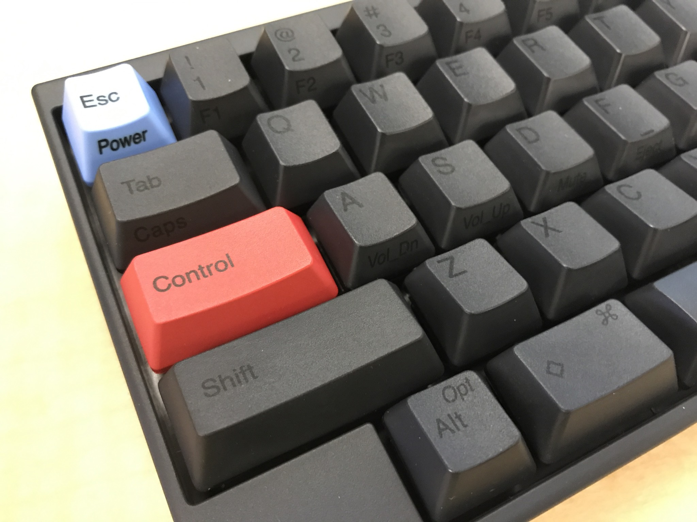

Voretex Core
The Vortex Core keyboard is delightful to type on, programmable without requiring a special application on a host computer, has excellent build quality, and generally pleasing aesthetics. Plus its freakin small.


The Vortex Core keyboard is delightful to type on, programmable without requiring a special application on a host computer, has excellent build quality, and generally pleasing aesthetics. Plus its freakin small.
The Happy Hacking Keyboard Professional 2 (HHKB Pro2) is an interesting option in the mechanical keyboard space. While some refer to it as their ‘endgame’ keyboard, other wonder if it even qualifies as ‘mechanical’ keyboard, as it uses mechanisms and materials similar to rubber domes, albeit of much higher quality.
So let’s talk about the build quality. It is an enclosed plastic case, which feels very sturdy. It has fold out feet if you like to raise up the board, which have no discernable wobble. The plugs are fitted smoothly, and have no play when attaching cables.
Layout. Everyone seems to do 60% slightly differently. HHKB has a pretty unique take on it as well. At least the Control key is in the right position.
Switches. 45 gram sensitivity. Feels light compared to a cherry blue. Good travel.
Keycaps. PBT keycaps, except for the spacebar. As I got the dark version, I don’t forsee discoloration, though as I am personally going to swap the space bar with a custom one, I don’t think this will be a problem anyway. There are blank caps or dye-subliminated black on gray caps available. Not trusting myself to learn the functions of a 60% board off the bat, I opted for the dye-subliminated caps. They feel very good, high quality on my fingertips, with a nice slight texture to them, and slight tabs for the homerow keys.
Overall feel. Solid. Does not feel higher quality than my Vortex or Das keyboards, which have gotten me accustomed to aluminum casing and Cherry MX caps.